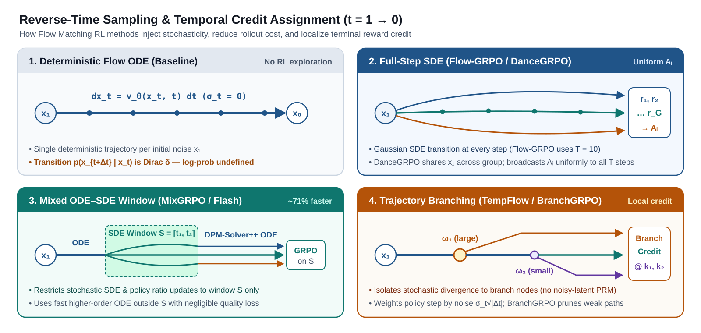
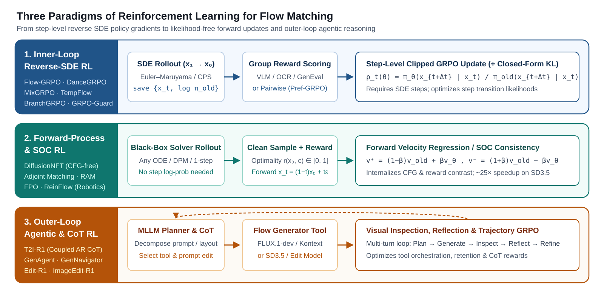

以 Stable Diffusion 3.5 和 FLUX 为代表的 Flow Matching（流匹配）与 Rectified Flow 模型，凭借沿直线常微分方程（ODE）传输的简单几何结构，实现了极高的采样速度与生成质量。然而，恰恰是这种在推理阶段极其高效的确定性，在引入在线强化学习（RL）对齐人类偏好与复杂指令时成了直接障碍——基于策略梯度的 RL 同时依赖两个条件：随机探索（对同一提示词采样多样轨迹以评估相对优劣）与可微的转移概率 $\log \pi_\theta(a_t \mid s_t)$（用于计算重要性采样比率与 KL 正则），而确定性 ODE 两者都不具备。
围绕这一核心矛盾，2025 至 2026 年的 Flow Matching RL 研究形成了一条清晰的演进主线：从借助 ODE-to-SDE 等价转换将 LLM 领域的 GRPO（Group Relative Policy Optimization）引入连续流模型，到利用滑动窗口与轨迹分叉解决算力瓶颈和稀疏信用分配，再到通过前向过程优化（DiffusionNFT）与随机最优控制（Adjoint Matching / RAM）彻底摆脱逆向 SDE 似然计算，最终走向将流模型作为可调用工具的多轮 Agentic RL 闭环推理系统。本文由浅入深串联整条技术脉络：先夯实从 MDP 到 GRPO 家族的 RL 理论基石，再完整推导保边际分布的 ODE-to-SDE 方程并剖析 PyTorch 核心代码，随后系统梳理 Flow-GRPO 方法族、前向/控制范式以及 Agentic RL 的最新进展。
时间记号约定（Lipman FM 与 SD3.5 / Flow-GRPO 的对照）：在 Lipman 等人的原始 Flow Matching 文献中，通常设 $t=0$ 为噪声、$t=1$ 为真实数据（$X_t = t X_1 + (1-t) X_0$）；而在 Stable Diffusion 3.5、FLUX 及 Flow-GRPO 等面向 Rectified Flow 对齐的文献与代码库中，普遍沿用扩散模型方向约定——$t=1$ 为标准高斯噪声 $x_1 \sim \mathcal{N}(0, I)$，$t=0$ 为干净图像 $x_0 \sim q$： $$x_t = (1-t)x_0 + t x_1, \qquad v_t = \frac{dx_t}{dt} = x_1 - x_0.$$ 因此逆向生成过程从 $t=1$ 积分至 $t=0$，离散时间步长 $\Delta t = t_{\text{prev}} - t \lt 0$。下文第 2 至第 4 节将统一采用 SD3.5 / Flow-GRPO 的方向约定，确保公式符号与 PyTorch 实现完全一一对应。
强化学习基础：从 MDP 到 GRPO
理解现代视觉生成中的 RL 算法，首先要看清为什么策略优化会从早期需要 Critic 的 PPO 一路简化到无 Critic 的组相对优化（GRPO），以及离散文本上的经验在迁移到连续图像轨迹时哪些假设会失效。
将迭代去噪建模为马尔可夫决策过程
根据 DDPO[1] 确立的经典形式化框架，多步迭代去噪生成过程可以被严格建模为一个有限视界马尔可夫决策过程（MDP）$(\mathcal{S}, \mathcal{A}, \rho_0, P, R)$：
- 状态空间 $s_t \triangleq (c, t, x_t)$：包含条件文本提示 $c$、当前时间步 $t$ 以及带噪隐变量 $x_t$。
- 动作空间 $a_t \triangleq x_{t-1}$（在连续时间调度器下记为 $x_{t+\Delta t}$）：去噪网络在状态 $s_t$ 下采样出的下一步隐状态。
- 策略 $\pi_\theta(a_t \mid s_t) \triangleq p_\theta(x_{t-1} \mid x_t, c)$：由神经网络参数化的单步条件转移分布。
- 转移核 $P(s_{t+1} \mid s_t, a_t) \triangleq (\delta_c, \delta_{t-1}, \delta_{x_{t-1}})$：一旦动作 $a_t$ 采样完成，下一状态就是完全确定的 Dirac $\delta$ 分布。
- 初始状态分布 $\rho_0(s_0) \triangleq (p(c), \delta_T, \mathcal{N}(0, I))$：提示词从训练分布抽取，初始隐变量从各向同性标准正态分布采样。
- 稀疏终端奖励 $R(s_t, a_t)$：仅在最终生成干净图像 $x_0$ 时给出奖励 $r(x_0, c)$，其余所有中间去噪步即时奖励均为 $0$。
这一 MDP 建模直接点明了视觉生成 RL 的核心难度：所有中间步均无直接反馈，奖励信号（如人类偏好打分、OCR 文本准确率或 VLM 评判）只能在轨迹终点观测，使长序列上的时间信用分配（credit assignment）极具挑战。
策略梯度与重要性采样
强化学习的目标是最大化策略期望回报 $J(\pi_\theta) = \mathbb{E}_{\tau \sim \pi_\theta}[R(\tau)]$。借助对数导数技巧 $\nabla_\theta P(\tau \mid \pi_\theta) = P(\tau \mid \pi_\theta)\nabla_\theta \log P(\tau \mid \pi_\theta)$ 并展开轨迹概率 $P(\tau \mid \pi_\theta) = \rho_0(s_0)\prod_t P(s_{t+1}\mid s_t,a_t)\pi_\theta(a_t \mid s_t)$，与 $\theta$ 无关的初始分布和转移核在求导后自然消去，得到策略梯度基本形式：
$$\nabla_\theta J(\pi_\theta) = \mathbb{E}_{\tau \sim \pi_\theta}\!\left[\sum_{t} \big(R(\tau) - b(s_t)\big)\,\nabla_\theta \log \pi_\theta(a_t \mid s_t)\right]$$其中减去仅依赖状态的基线函数 $b(s_t)$ 不会引入梯度偏差（因为 $\mathbb{E}_{a_t \sim \pi_\theta}[b(s_t)\nabla_\theta \log\pi_\theta(a_t \mid s_t)] = 0$），却能显著压缩蒙特卡洛估计的方差。
然而在多步生成任务中，采样一批轨迹 $\tau$ 需要几十次十亿参数级 DiT 前向推理与昂贵的视觉奖励评估。如果每批样本只做一次梯度更新就丢弃，样本利用率极低。重要性采样（Importance Sampling）通过测度变换恒等式解决了这一瓶颈：
$$\mathbb{E}_{x \sim p}[f(x)] = \int f(x)\,\frac{p(x)}{q(x)}\,q(x)\,dx = \mathbb{E}_{x \sim q}\!\left[\frac{p(x)}{q(x)}\,f(x)\right]$$令旧策略 $\pi_{\theta_{\text{old}}}$ 充当采样分布 $q$，即可用缓存的离线批次连续执行多轮 mini-batch 更新，只需为每步梯度乘上概率比值 $\rho_t(\theta) = \frac{\pi_\theta(a_t \mid s_t)}{\pi_{\text{old}}(a_t \mid s_t)}$。但一旦 $\pi_\theta$ 偏离 $\pi_{\text{old}}$ 过多，重要性比值方差会急剧膨胀并冲垮训练。如何以低方差估计优势并控制步长，正是 PPO 与 GRPO 的核心所在。
PPO、GAE 与直接偏好优化 DPO
PPO[2] 从“降方差”和“控步长”双管齐下。一方面引入价值网络（Critic）$V_\psi(s_t)$ 估计状态的平均未来回报，并基于单步 TD 误差 $\delta_t = r_t + \gamma V_\psi(s_{t+1}) - V_\psi(s_t)$ 构造广义优势估计（GAE）：
$$\widehat A_t^{\text{GAE}(\gamma, \lambda)} = \sum_{k=0}^{T-1-t} (\gamma\lambda)^k \delta_{t+k}, \qquad \widehat A_t = \delta_t + \gamma\lambda\,\widehat A_{t+1}$$衰减系数 $\lambda \in [0, 1]$ 优雅地调节了偏差与方差的权衡：$\lambda = 0$ 时退化为低方差但高偏差的单步 TD(0)；$\lambda = 1$ 时退化为无偏但高方差的蒙特卡洛回报（工程中通常取 $\lambda = 0.95$）。在 PyTorch 中，GAE 可通过一次逆向遍历高效算出：
with torch.no_grad():
nextvalues = 0.0
lastgaelam = 0.0
advantages_reversed = []
gen_len = token_level_rewards.shape[-1]
for t in reversed(range(gen_len)):
delta = token_level_rewards[:, t] + gamma * nextvalues - values[:, t]
lastgaelam = delta + gamma * lam * lastgaelam
# 若存在变长序列 mask，需在此处清零无效步的状态传递
nextvalues = values[:, t]
advantages_reversed.append(lastgaelam)
advantages = torch.stack(advantages_reversed[::-1], dim=1)
returns = advantages + values另一方面，PPO 用近端截断（Clip）将策略比率 $\rho_t(\theta)$ 限制在 $[1-\epsilon, 1+\epsilon]$ 内，将 Actor 损失、Critic 价值损失、熵奖励与参考策略 KL 惩罚合为一体：
$$\mathcal{L}_{\text{PPO}}(\theta,\psi) = \mathbb{E}_{\tau \sim \pi_{\text{old}}}\!\left[\frac{1}{T}\sum_{t=0}^{T-1}\Big(-\min\big(\rho_t(\theta)\widehat A_t,\, \operatorname{clip}(\rho_t(\theta),1-\epsilon,1+\epsilon)\widehat A_t\big) + c_V \ell_t^{\text{value}}(\psi) - c_H \mathcal{H}(\pi_\theta) + \beta\,D_{\text{KL}}(\pi_\theta \,\|\, \pi_{\text{ref}})\Big)\right]$$PPO 的痛点在于系统代价过高——需同时维护 Actor、Critic、Reward 与 Reference 四个大模型；而在视觉生成中，让 Critic $V_\psi(x_t, t, c)$ 从高维带噪隐图像 $x_t$ 准确预测终局审美分数更是难上加难。
DPO[3] 另辟蹊径，直接绕开奖励模型与 Critic：KL 正则化 RL 目标 $\max_\pi \mathbb{E}[r(x,y)] - \beta D_{\text{KL}}(\pi \,\|\, \pi_{\text{ref}})$ 具有闭式最优解 $\pi^*(y \mid x) = \frac{1}{Z(x)}\pi_{\text{ref}}(y \mid x)\exp(r(x,y)/\beta)$。反解出奖励函数 $r(x,y) = \beta\log\frac{\pi^*(y\mid x)}{\pi_{\text{ref}}(y\mid x)} + \beta\log Z(x)$ 并代入 Bradley–Terry 偏好模型，配分函数 $Z(x)$ 恰好消去，得到纯监督形式的偏好对比损失：
$$\mathcal{L}_{\text{DPO}}(\theta) = -\mathbb{E}_{(x, y_w, y_l) \sim \mathcal{D}}\!\left[\log \sigma\!\left(\beta\log\frac{\pi_\theta(y_w \mid x)}{\pi_{\text{ref}}(y_w \mid x)} - \beta\log\frac{\pi_\theta(y_l \mid x)}{\pi_{\text{ref}}(y_l \mid x)}\right)\right]$$从数学本质看，DPO 求解的正是与 PPO RLHF 相同的优化目标，只是把“在线采样 + 梯度上升”换成了“闭式解 + 离线监督学习”（也正因仅约束相对差值，实操中需警惕正负样本概率同时下降的风险）。将这一思想迁移到扩散模型，Diffusion-DPO[4] 利用前向加噪的 ELBO 噪声预测误差替代不可算的 $\log \pi_\theta(x_0 \mid c)$，在 Pick-a-Pic 等静态偏好对上实现了稳定对齐——但它依然受限于离线数据分布，无法像在线 RL 那样在策略演化中主动探索高奖励区域。
GRPO 及其后 R1 演进
GRPO（Group Relative Policy Optimization，组相对策略优化）[5] 保留了在线探索能力，同时彻底砍掉了 Value Critic。对同一提示词 $q$ 采样一组共 $G$ 条轨迹 $\{o_i\}_{i=1}^G$，获得结果奖励 $\mathbf{R} = (R_1, \dots, R_G)$ 后，直接以组内均值与标准差构造归一化相对优势，并广播给整条轨迹的每一步：
$$\widehat A_{i,t} = \widehat A_i = \frac{R_i - \operatorname{mean}(\mathbf{R})}{\operatorname{std}(\mathbf{R}) + \delta}$$结合步级重要性比率 $r_{i,t}(\theta) = \frac{\pi_\theta(a_{i,t} \mid s_{i,t})}{\pi_{\text{old}}(a_{i,t} \mid s_{i,t})}$ 与无偏低方差的参考 KL 惩罚（工程上常采用 Schulman $k_3$ 估计 $\frac{\pi_{\text{ref}}}{\pi_\theta} - \log\frac{\pi_{\text{ref}}}{\pi_\theta} - 1$），完整 GRPO 损失为：
$$\mathcal{L}_{\text{GRPO}}(\theta) = -\mathbb{E}_{q, \{o_i\}}\!\left[\frac{1}{G}\sum_{i=1}^G \frac{1}{|o_i|}\sum_{t=1}^{|o_i|} \min\!\Big(r_{i,t}(\theta)\widehat A_{i,t},\, \operatorname{clip}(r_{i,t}(\theta), 1-\epsilon, 1+\epsilon)\widehat A_{i,t}\Big)\right] + \beta\,\mathbb{E}_{i,t}\!\left[D_{\text{KL}}(\pi_\theta \,\|\, \pi_{\text{ref}})\right]$$# GRPO 组内相对优势计算（标准 GRPO 与去标准差版 Dr. GRPO）
scores = token_level_rewards.sum(dim=-1)
with torch.no_grad():
for i in range(bsz):
id2score[index[i]].append(scores[i])
for idx, vals in id2score.items():
t = torch.stack(vals)
id2mean[idx] = t.mean()
id2std[idx] = t.std()
for i in range(bsz):
if norm_adv_by_std_in_grpo:
scores[i] = (scores[i] - id2mean[index[i]]) / (id2std[index[i]] + eps)
else:
scores[i] = scores[i] - id2mean[index[i]] # Dr. GRPO 省略标准差归一化
advantages = scores.unsqueeze(-1) * response_maskDeepSeek-R1 之后，围绕长推理链的一系列后续工作迅速揭示了基础 GRPO 的几个结构性缺陷，而这些洞见几乎全部在后续 Flow Matching RL 中一一重现：
- MDPO（Kimi k1.5）[6] 从在线镜像下降（Mirror Descent）导出更紧凑的代理目标：从当前策略 $\pi_{\theta_i}$ 采样轨迹 $(y, z)$，用组均值近似配分对数 $\tau\log Z(x) \approx \bar r$，直接让 $\tau\log\frac{\pi_\theta(y\mid x)}{\pi_{\theta_i}(y\mid x)}$ 回归到相对奖励 $r(x,y,y^*) - \bar r$。Kimi k1.5 同时指出，基于规则的 ORM 结果奖励往往比 PRM 过程价值函数更容易催生“aha moment”，因为过激的 Value 惩罚会过早抹杀“差一点就成功”的探索路径。
- DAPO[7] 在 32B 模型上针对 GRPO 痛点提出四项修复：（1）Clip-Higher 非对称截断区间 $[1-\epsilon_{\text{low}}, 1+\epsilon_{\text{high}}]$，为低概率探索动作留出上浮空间，防止熵塌缩；（2）Dynamic Sampling 动态过滤全对或全错、组内方差为零的无效样本组；（3）Token 级平均损失以消除长短回复的梯度不公；（4）超长截断软惩罚。
- VAPO[8] 则像精密的算法工程师，证明只要修复 Critic 训练瓶颈，基于价值的 RL 依然能打平甚至超越无 Critic 路线——关键在于 Value-Pretraining、Decoupled-GAE（Critic 用 $\lambda=1.0$ 保持无偏回归，Actor 用 $\lambda=0.95$ 控制方差）、Length-Adaptive GAE、Clip-Higher 以及正样本辅助 NLL 损失。
- GSPO[9] 指出逐 token 裁剪 $\rho_{i,t}$ 在长序列下存在严重失真，改用长度归一化的序列级几何平均重要性比 $s_i(\theta) = \exp\!\big(\frac{1}{|y_i|}\sum_t \log r_{i,t}(\theta)\big)$，借助 stop-gradient 技巧即可将序列级比值无痛回传给每个 token。
- On-Policy Distillation（OPD）[10] 将 RL 的在策略状态分布与 SFT 的稠密逐点监督焊在一起：由学生模型 $\pi_\theta$ 自行采样轨迹，并在每一步向教师 $\nu$ 询问局部概率分布，按 Forward KL $D_{\text{KL}}(\nu \,\|\, \pi_\theta)$（偏重覆盖多模态，如 GKD）或 Reverse KL $D_{\text{KL}}(\pi_\theta \,\|\, \nu)$（偏重锁定主峰，如 PG-OPD）进行在线蒸馏。
| 训练路径 | 数据来源 | 观测状态分布 | 反馈信号密度 | 核心痛点 |
|---|---|---|---|---|
| SFT / 离线蒸馏 | 教师或静态数据集 | 教师分布 | 稠密（每步/每 token） | 暴露偏差：推理进入未见状态后误差累积 |
| RL（PPO / GRPO） | 学生自采样轨迹 | 在策略学生分布 | 稀疏（通常仅终端标量） | 信用分配困难、高方差、样本利用率较低 |
| On-Policy Distillation | 学生自采样轨迹 | 在策略学生分布 | 稠密（教师全分布或 logp） | 需在线查询教师模型，系统开销偏高 |
上述 LLM-RL 中的每一条经验都能在后文找到精准镜像：DAPO 的 Clip-Higher 对应 GRPO-Guard 对连续比率漂移的抑制；零方差样本组催生了 Pref-GRPO 的成对偏好建模；过程信用分配直接驱动了 TempFlow-GRPO 与 BranchGRPO；而无需反向概率比的在线密集监督则正是 DiffusionNFT 的核心精神。
连接流匹配与在线 RL：ODE 到 SDE 的等价转换
回到 Flow Matching：为什么不能直接拿预训练好的 Rectified Flow 跑 GRPO？因为其采样过程遵循确定性概率流常微分方程 $dx_t = v_\theta(x_t, t, c)\,dt$（从 $t=1$ 到 $t=0$）。一旦给定初始高斯噪声 $x_1$，无论是 Euler 还是高阶求解器，都会生成唯一一条固定轨迹 $\{x_1, \dots, x_0\}$，单步转移分布退化为 Dirac $\delta$ 分布 $p_\theta(x_{t+\Delta t} \mid x_t, c) = \delta(x_{t+\Delta t} - \Phi(x_t))$。这导致两个致命缺口：一是同一提示下缺乏多样化探索轨迹，二是 $\log \pi_\theta$ 根本无法求值。
保边际分布的 SDE 推导
Flow-GRPO[12] 给出的破局方案十分优雅：将确定性 ODE 转换为在所有时刻 $t \in [0, 1]$ 上严格保持相同边际概率密度 $p_t(x)$ 的随机微分方程（SDE）[11]。推导过程可分为四步：
第一步：正向 Fokker–Planck 等价条件。 在正向加噪方向（$t: 0 \to 1$），Flow ODE 满足连续性方程 $\partial_t p_t + \nabla\cdot(p_t v_t) = 0$。考察标准正向 Itô SDE：$dx_t = f_t^{\text{fwd}}(x_t)\,dt + \sigma_t\,dw_t$，其边际密度演化由 Fokker–Planck 方程支配：
$$\frac{\partial p_t}{\partial t} + \nabla\cdot(p_t f_t^{\text{fwd}}) = \frac{1}{2}\sigma_t^2 \Delta p_t = \nabla\cdot\!\left(\frac{\sigma_t^2}{2}\nabla p_t\right) = \nabla\cdot\!\left(\frac{\sigma_t^2}{2}p_t\nabla\log p_t\right)$$令两式对 $\partial_t p_t$ 的演化完全一致，即 $\nabla\cdot(p_t v_t) = \nabla\cdot(p_t f_t^{\text{fwd}} - \frac{\sigma_t^2}{2}p_t\nabla\log p_t)$，解得正向保边际漂移项：$f_t^{\text{fwd}}(x_t) = v_t(x_t) + \frac{\sigma_t^2}{2}\nabla\log p_t(x_t)$。
第二步：Anderson 时间反转（$t: 1 \to 0$）。 根据 Anderson 逆时 SDE 定理[11]，将正向 SDE 反转用于生成采样时，漂移项需减去 $\sigma_t^2\nabla\log p_t(x_t)$，于是得到逆向生成 SDE：
$$dx_t = \Big(f_t^{\text{fwd}}(x_t) - \sigma_t^2 \nabla\log p_t(x_t)\Big)dt + \sigma_t\,d\bar w_t = \left[v_t(x_t) - \frac{\sigma_t^2}{2}\nabla\log p_t(x_t)\right]dt + \sigma_t\,d\bar w_t$$从物理直觉上看，逆向采样中 $dt \lt 0$，因此 $-\frac{\sigma_t^2}{2}\nabla\log p_t(x_t)\,dt$ 恰好沿对数概率密度上升最快的方向拉回样本，抵消随机布朗运动 $\sigma_t\,d\bar w_t$ 带来的扩散发散。
第三步：用流速度场表示边际 Score。 在 Rectified Flow 线性插值 $x_t = (1-t)x_0 + t x_1$（其中 $x_1 \sim \mathcal{N}(0, I)$）下，条件分布 $p(x_t \mid x_0) = \mathcal{N}((1-t)x_0, t^2 I)$ 满足 Tweedie 恒等式 $\nabla_{x_t}\log p(x_t \mid x_0) = -\frac{x_t - (1-t)x_0}{t^2} = -\frac{x_1}{t}$，取条件期望即得 $\nabla\log p_t(x_t) = -\frac{\mathbb{E}[x_1 \mid x_t]}{t}$。结合 $v_t(x_t) = \mathbb{E}[x_1 - x_0 \mid x_t]$ 与 $x_t = (1-t)\mathbb{E}[x_0 \mid x_t] + t\,\mathbb{E}[x_1 \mid x_t]$ 消去 $\mathbb{E}[x_0 \mid x_t]$，可得 $\mathbb{E}[x_1 \mid x_t] = x_t + (1-t)v_t(x_t)$，从而把抽象的 Score 直接转化为模型已预测的速度：
$$\nabla \log p_t(x_t) = -\frac{1}{t}\Big(x_t + (1-t)v_t(x_t)\Big)$$第四步：Euler–Maruyama 离散化与闭式 KL 散度。 将 Score 关系代入逆向 SDE，并以负步长 $\Delta t = t_{\text{prev}} - t \lt 0$ 离散化，即得高斯策略转移 $\pi_\theta(x_{t+\Delta t} \mid x_t, c) = \mathcal{N}(\mu_\theta(x_t, t),\, \sigma_t^2 |\Delta t|\,I)$：
$$x_{t+\Delta t} = \underbrace{x_t + \left[v_\theta(x_t, t) + \frac{\sigma_t^2}{2t}\big(x_t + (1-t)v_\theta(x_t, t)\big)\right]\Delta t}_{\mu_\theta(x_t, t)} + \sigma_t\sqrt{|\Delta t|}\,\epsilon, \qquad \epsilon \sim \mathcal{N}(0, I)$$对均值项按 $x_t$ 与 $v_\theta(x_t, t)$ 合并整理，得到与代码完全吻合的形式：
$$\mu_\theta(x_t, t) = x_t\left(1 + \frac{\sigma_t^2}{2t}\Delta t\right) + v_\theta(x_t, t)\left(1 + \frac{\sigma_t^2(1-t)}{2t}\right)\Delta t$$取噪声调度 $\sigma_t = a\sqrt{\frac{t}{1-t}}$（$a$ 为控制随机探索强度的标量超参数），由于策略 $\pi_\theta$ 与参考策略 $\pi_{\text{ref}}$ 共享完全相同的各向同性方差 $\sigma_t^2 |\Delta t| I$，两者单步 KL 散度退化为两个速度场预测差的加权 $L_2$ 范数，完全免去蒙特卡洛估计：
$$D_{\text{KL}}(\pi_\theta \,\|\, \pi_{\text{ref}}) = \frac{\|\mu_\theta - \mu_{\text{ref}}\|^2}{2\sigma_t^2 |\Delta t|} = \frac{|\Delta t|}{2}\left(\frac{1}{\sigma_t} + \frac{\sigma_t(1-t)}{2t}\right)^2 \|v_\theta(x_t, t) - v_{\text{ref}}(x_t, t)\|^2$$ODE-to-SDE 工程实现解析
在官方 yifan123/flow_grpo 代码库[12]中，整个 ODE-to-SDE 转换被封装在一个兼顾“采样 rollout”与“反向更新重算 logp”的函数 sde_step_with_logprob 中：
def sde_step_with_logprob(
self,
model_output: torch.FloatTensor, # 神经网络预测速度 v_theta(x_t, t, c)
timestep: Union[float, torch.Tensor],
sample: torch.FloatTensor, # 当前时刻隐变量 x_t
noise_level: float = 0.7,
prev_sample: Optional[torch.FloatTensor] = None,
generator: Optional[torch.Generator] = None,
):
model_output = model_output.float()
sample = sample.float()
if prev_sample is not None:
prev_sample = prev_sample.float()
# 将离散调度器时间步映射到连续噪声比例 sigma in [0, 1]
step_index = [self.index_for_timestep(t) for t in timestep]
prev_step_index = [step + 1 for step in step_index]
sigma = self.sigmas[step_index].view(-1, *([1] * (sample.ndim - 1)))
sigma_prev = self.sigmas[prev_step_index].view(-1, *([1] * (sample.ndim - 1)))
sigma_max = self.sigmas[1].item() # 防止起点 sigma == 1 时出现 1 / (1 - sigma) 奇异值
dt = sigma_prev - sigma # 逆向去噪过程中严格为负 (1 -> 0)
std_dev_t = torch.sqrt(sigma / (1 - torch.where(sigma == 1, sigma_max, sigma))) * noise_level
# 保边际 SDE 的条件高斯均值: mu_theta(x_t, t)
prev_sample_mean = (
sample * (1 + std_dev_t**2 / (2 * sigma) * dt)
+ model_output * (1 + std_dev_t**2 * (1 - sigma) / (2 * sigma)) * dt
)
# 分支 1（Rollout 采样阶段）: 采样下一步隐状态; 分支 2（策略更新阶段）: 复用缓冲区动作
if prev_sample is None:
variance_noise = randn_tensor(
model_output.shape, generator=generator, device=model_output.device, dtype=model_output.dtype
)
prev_sample = prev_sample_mean + std_dev_t * torch.sqrt(-1 * dt) * variance_noise
# 各向同性高斯转移对数概率（在空间与通道维度取均值以稳定策略比率）
step_std = std_dev_t * torch.sqrt(-1 * dt)
log_prob = (
-((prev_sample.detach() - prev_sample_mean) ** 2) / (2 * (step_std**2))
- torch.log(step_std)
- torch.log(torch.sqrt(2 * torch.as_tensor(math.pi, device=sample.device)))
)
log_prob = log_prob.mean(dim=tuple(range(1, log_prob.ndim)))
return prev_sample, log_prob, prev_sample_mean, std_dev_t这段短短三十余行的核心实现里，有四个直接关系到训练能否收敛的工程细节：
dt的正负号处理：逆向调度时sigma_prev < sigma，dt本身是负数，因此在漂移均值中直接乘以有符号dt推动样本去噪，而在计算扩散标准差时必须取torch.sqrt(-1 * dt)（即 $\sqrt{|\Delta t|}$）。- 终点奇异性保护：第一步时 $t = \sigma = 1$，$\sqrt{\sigma/(1-\sigma)}$ 分母为零；通过
torch.where(sigma == 1, sigma_max, sigma)将首步分母安全钳位到次大网格点sigmas[1]。 - 动作截断梯度（
prev_sample.detach()）：在策略更新阶段，已经执行过的动作prev_sample从缓冲区取出，梯度仅通过prev_sample_mean（即 $v_\theta$）反向传播。 - 隐空间维度取均值（
mean而非sum）：若直接对 $(C, H, W)$ 数万维坐标求和，微小的均值漂移都会被放大成极端的 $\exp(\log\pi_\theta - \log\pi_{\text{old}})$，导致全步瞬间触发 PPO 裁剪；按维度取均值是高分辨率 DiT 上比率稳定的关键保障。
逆向采样链上的 Flow-GRPO 方法族
有了 sde_step_with_logprob 作为基本原语，围绕“如何加速采样、如何精准分配时间信用、如何防止视觉奖励黑客”这一系列核心问题，逆向采样链上的 Flow-GRPO 方法族迅速演化出多个关键分支。


Flow-GRPO 与 DanceGRPO：确立在线 RL 基线
Flow-GRPO[12] 在提出 ODE-to-SDE 转换的同时，引入了一项极为实用的加速策略——去噪步数缩减（Denoising Reduction）：训练采样阶段仅跑 $T=10$ 步粗糙 SDE 收集轨迹，虽单图画质略低于推理配置，却已足以准确排序各轨迹的奖励相对高低；等到测试推理时再恢复为 $T=40$ 步确定性 ODE 采样，兼顾了训练吞吐与最终生成精度。配合上述闭式 KL 正则防止过拟合，Flow-GRPO 在 SD3.5 上的组合构图（GenEval）、图像文字渲染（OCR）与人类偏好指标均取得了大幅跃升。
DanceGRPO[13] 则将同一套 SDE-MDP 范式统一推广至扩散模型与 Rectified Flow 两大流派，覆盖 Stable Diffusion 1.4、FLUX、HunyuanVideo 与 SkyReels-I2V 等图文/视频生成底座（T2I、T2V、I2V）。其标准裁剪目标对组内 $G$ 条轨迹与 $T$ 个时间步联合求平均：
$$J_{\text{DanceGRPO}}(\theta) = \mathbb{E}_{\{o_i\}_{i=1}^G \sim \pi_{\theta_{\text{old}}}}\!\left[\frac{1}{G}\sum_{i=1}^G \frac{1}{T}\sum_{t=1}^T \min\!\Big(\rho_{i,t}(\theta)\widehat A_i,\, \operatorname{clip}(\rho_{i,t}(\theta), 1-\epsilon, 1+\epsilon)\widehat A_i\Big)\right]$$在工程实践层面，DanceGRPO 总结了四条直接决定视觉 RL 稳定性的经验法则：
- 组内共享初始噪声：早期的扩散 RL（如 DDPO）为每条样本独立采样初始噪声 $x_1$；DanceGRPO 发现将同一提示组内的 $G$ 条轨迹全部绑定到同一个初始噪声 $x_1$，可以让奖励差异完全来自中间 SDE 探索而非“随机初始种子运气”，显著降低梯度方差。
- 时间步子采样：去噪轨迹中不必对所有时间步都做反向更新，随机或间隔抽取部分时间步即可在不掉点的情况下大幅降低显存与计算开销。
- 多奖励模型协同防 Hacking：单独优化美学分数（如 HPS-v2.1）极易导致画面过度饱和、呈现不自然的“油腻感”；将 HPS-v2.1 与 CLIP 图文对齐分数联合加权，能有效守住真实纹理与语义约束。
- 省略 KL 与 Best-of-$N$ 对齐：在共享噪声与多奖励约束下，DanceGRPO 验证即使移除显式 KL 正则项也未出现崩溃，反而加快了优化；配合 Best-of-$N$ 候选筛选可进一步放大高奖励路径的收益。
MixGRPO、TempFlow-GRPO 与 BranchGRPO：效率与时间信用分配
尽管 Flow-GRPO 与 DanceGRPO 跑通了在线 RL 闭环，全轨迹 SDE 优化仍存在两大固有短板：其一是全链条高昂算力开销（新旧策略必须对全部 $T$ 步重算后验概率）；其二是时间均匀性假设（Temporal Uniformity Assumption）——算法把唯一的终端奖励均等地摊给所有时间步，忽视了早期高噪阶段决定宏观构图与物体布局、后期低噪阶段只负责细节润色的物理事实。
MixGRPO[14] 直击算力瓶颈，提出混合 ODE–SDE 滑动窗口策略：只在沿去噪时间移动的局部窗口 $S = [t_1, t_2]$ 内使用随机 SDE 采样并计算 GRPO 梯度，窗口之外全部切换为确定性 ODE 采样：
$$dx_t = \begin{cases} \left[v_\theta(x_t, t) - \frac{\sigma_t^2}{2}\nabla\log p_t(x_t)\right]dt + \sigma_t\,d\bar w_t, & t \in S \\ v_\theta(x_t, t)\,dt, & t \notin S \end{cases}$$窗口外的 ODE 步骤彻底免除了后验对数概率的计算；MixGRPO-Flash 进一步在窗口外启用高阶求解器（如 DPM-Solver++），在不损伤 HPS-v2.1、PickScore、ImageReward 与 UnifiedReward 指标的前提下，将整体训练时间压缩约 71%。
TempFlow-GRPO[15] 则正面对抗时间均匀性假设，引入两项精细的时间感知机制：
- 轨迹分叉机制（Trajectory Branching）：由于半去噪中间态 $x_t$ 充满噪声、语义模糊，专门训练视觉过程奖励模型（PRM）极其困难。TempFlow-GRPO 巧妙地利用确定性–随机性切换来取代 PRM：从起点到选定分叉步 $k$ 全程走确定性 ODE，仅在时刻 $k$ 注入随机 SDE 噪声分化出多个分支 $x_{k+\Delta t} = \text{SDE}(x_k, \epsilon)$，随后各分支再走回确定性 ODE 抵达终点 $x_0$。根据信用局部化定理（Credit Localization），各分支最终奖励的方差严格且唯一地归因于步 $k$ 的探索动作，无需修改任何奖励模型即实现了精确的过程信用分配。
- 噪声感知策略权重（Noise-Aware Policy Weighting）：实证显示终端奖励方差在早期高噪步达到峰值并随后单调递减，而这恰与 SDE 扩散步长 $\sigma_t\sqrt{|\Delta t|}$ 的变化曲线高度同频。因此 TempFlow-GRPO 直接用当前步的归一化噪声强度对策略损失加权：
高噪声早期获得更大梯度权重以鼓励宏观结构探索，低噪声后期维持温和微调以保护精细纹理。
沿同一思路继续扩展，BranchGRPO[16] 将单点分叉推广为共享确定性前缀的结构化分叉树（Branching Tree）：不仅在关键深度按父节点相对优势精细分配信用，还能在生成中途提前剪枝低收益分支，将整体 RL 训练耗时进一步降低约 55%。
稳定化改进：Pref-GRPO、GRPO-Guard 与 Flow-CPS
在实用化落地过程中，近期几项聚焦稳定性与数值精度的改进同样值得关注：
- Pref-GRPO[17] 指出标量奖励模型往往把视觉品质相近的样本打出极其接近的分数，经组内标准差归一化后，微小的打分噪声会被急剧放大并诱发虚假的“刷分式”Reward Hacking；改用成对偏好奖励模型（PPRM）并以组内胜率计算相对优势，能够显著抑制过优化崩坏。
- GRPO-Guard[18] 深入剖析了 FLUX.1-dev 与 SD3.5-M 上步级重要性比 $\rho_{i,t}$ 随时间步发生的隐式分布偏移，提出受控调节裁剪策略，从机制上呼应了 LLM 中 DAPO 的 Clip-Higher 思想。
- Flow-CPS[19] 则改进了采样器离散误差本身，以保系数采样（Coefficients-Preserving Sampling）取代粗糙的 Euler–Maruyama 近似，在低步数下更稳定地保持 SDE 边际统计特性。
超越逆向 SDE：前向过程优化、随机最优控制与控制策略
无论引入滑动窗口还是分支树，逆向 SDE 路线始终离不开离散高斯转移假设、特定采样器绑定以及沿采样链保存隐状态的历史负担。2025 年底至 2026 年的另一股强力范式革新直指核心问题：RL 微调一定要在逆向采样链上计算转移概率吗？


DiffusionNFT：基于前向过程的在线强化学习
DiffusionNFT[20] 彻底跳出了逆向采样链。传统基于拒绝采样的微调（RFT）只保留高分图像、丢弃低分图像，不仅浪费一半 rollout 算力，还容易因为“只知道往哪走、不知道避开哪”而陷入分布坍缩（Reward Collapse）。DiffusionNFT 允许使用任意黑盒采样器（高阶 ODE、少步蒸馏器乃至无 CFG 采样）生成干净图像 $x_0$ 并评估归一化最优性奖励 $r(x_0, c) \in [0, 1]$，随后直接把训练拉回标准 Flow Matching 的前向加噪插值过程 $x_t = (1-t)x_0 + t\epsilon$（目标速度为 $\epsilon - x_0$）。
其点睛之笔在于围绕旧策略 $v^{\text{old}}$ 构造了一对隐式正负速度场参数化（$\beta \gt 0$ 为更新幅度系数）：
$$v_\theta^+(x_t, t, c) = (1 - \beta)\,v^{\text{old}}(x_t, t, c) + \beta\,v_\theta(x_t, t, c), \qquad v_\theta^-(x_t, t, c) = (1 + \beta)\,v^{\text{old}}(x_t, t, c) - \beta\,v_\theta(x_t, t, c)$$并最小化如下负样本感知（Negative-Aware）的前向流匹配回归目标：
$$\mathcal{L}_{\text{NFT}}(\theta) = \mathbb{E}_{(x_0, c) \sim \pi_{\text{old}},\, t,\, \epsilon}\!\left[r(x_0, c)\,\big\|v_\theta^+(x_t, t, c) - (\epsilon - x_0)\big\|^2 + \big(1 - r(x_0, c)\big)\,\big\|v_\theta^-(x_t, t, c) - (\epsilon - x_0)\big\|^2\right]$$展开差值即可看到一个深刻的数学同构：$v_\theta^+ - v_\theta^- = 2\beta(v_\theta - v^{\text{old}})$。这在代数结构上与无分类器引导（Classifier-Free Guidance, CFG）完全同构——传统 CFG 在推理时以双倍前向开销放大“有条件与无条件”之差，而 DiffusionNFT 在 RL 训练中放大“高奖励与低奖励”之差，将引导能力直接内化进单一的 CFG-Free 网络权重中。由于免除了逆向对数似然追踪与前反向离散化失配，DiffusionNFT 在 SD3.5-Medium 上实现了高达 Flow-GRPO $25\times$ 的收敛提速，约 1k 步即把 GenEval 分数从 $0.24$ 推升至 $0.98$。其两阶段五重奖励课程设计也颇具参考价值：
- 第一阶段（模型偏好对齐）：在 Pick-a-Pic 上联合优化 PickScore、CLIPScore 与 HPSv2.1，先稳固画面审美与基本图文匹配。
- 第二阶段（可验证规则强化）：叠加入 GenEval 与 OCR 硬规则奖励，在保住美学质感的同时大幅拉升复杂指令遵循与文字书写精度。
随机最优控制与具身连续控制策略
与 DiffusionNFT 几乎平行，随机最优控制（SOC）以及机器人具身策略（Embodied Policies）两条路线也各自收敛到了“随机注入”与“前向回归代理”的同一组数学原语上：
- Adjoint Matching 与 RAM：Adjoint Matching[21] 将 KL 正则化的流模型奖励微调刻画为无记忆随机最优控制问题，只需拟合伴随 ODE 的最优条件而无需贯穿整条采样链求梯度，但原版仍依赖奖励函数梯度 $\nabla_{x_0} r(x_0)$。最新提出的 Reinforce Adjoint Matching（RAM）[22] 将伴随匹配的最优性条件与 REINFORCE 恒等式结合，导出了纯回归一致性损失——既无需伴随反向扫描，也无需一步步计算 SDE 重要性比率，直接把 SOC RL 扩展到了不可微的 VLM 与 OCR 奖励上。
- 具身机器人中的 Flow RL（ReinFlow 与 FPO）：在视觉生成之外，Flow Matching 正广泛用于机器人高频连续动作生成，其在线 RL 方案恰好构成了镜像对照。ReinFlow[23] 通过向确定性 Rectified Flow / Shortcut 动作策略注入可学习噪声网络，将其化为可计算精确转移似然的离散时间马尔可夫链（对应视觉中的 Flow-GRPO 思路）；而 FPO（Flow Policy Optimization）[24] 则完全跳过精确似然，直接利用条件流匹配损失（CFM ELBO）构造类似 PPO-clip 的代理比率，以纯前向方式让机械臂策略从零学会多模态分布（对应视觉中的 DiffusionNFT 思路）。
从单轮去噪到推理与 Agentic 强化学习
前两节讨论的所有算法均作用于单次前向去噪的内循环（Inner Loop）。然而，面对包含复杂空间约束、多物体计数与属性绑定的生成指令，或者需要反复局部修改的多步骤图像编辑任务，单靠一轮 28 步速度场积分很难不经反思与检验就一步到位。于是，结合显式思维链（CoT）与多轮智能体闭环的 Agentic RL 成了补齐流模型推理上限的新方向。
耦合式推理生成：T2I-R1 与自回归 CoT
T2I-R1[25] 最早把 R1 式的强化推理引入统一多模态自回归模型（基于 Janus-Pro），借助 BiCoT-GRPO 联合优化双层思维链：
- 语义级 CoT（Semantic-level CoT）：先用 GPT-4o 构造推理轨迹冷启动，使模型在生图前先用文本规划画面构图、空间关系与细节属性。
- Token 级 CoT（Token-level CoT）：随后沿用自回归模型逐 token 预测图像 patch 的生成方式，在一次生成通行中完成渲染。
整个 rollout 过程同时接受四类异构奖励模型（HPM 美学模型 HPS/ImageReward、目标检测器 GroundingDINO/YOLO-World、视觉问答模型 LLaVA 以及微调后的 LLaVA-OneVision ORM）的联合打分，并以此驱动 GRPO 更新。同期的 ReasonGen-R1[26] 与 GoT-R1[27] 也遵循这种在同一自回归策略内耦合 SFT 规划与 GRPO 对齐的路线。
但从架构本质来看，把自回归图像逐 token 解码包装成“Token 级 CoT”虽然能顺滑复用文本 RL 基础设施，离散自回归生成器的画质、精细排版与局部物理一致性依然普遍逊于 FLUX、SD3.5 这类连续 Flow Matching DiT。自然而然地，研究者开始思考：如何在保留连续流模型高质量渲染底座的同时，为其赋予多轮推理、视觉自检与纠错能力？
面向流匹配模型的 Agentic RL
不同于把理解与像素强行塞进同一个离散词表，面向流匹配模型的 Agentic RL 选择了“认知与渲染解耦”——将连续 Flow Matching 生成与编辑模型作为智能体在多轮闭环 MDP 中按需调用的工具：
- 多轮工具调用智能体（GenAgent 与 Generation Navigator）：GenAgent[28] 将复杂文生图构建为“规划 → 调用生成 → 视觉审视 → 反思改写 → 局部精修”的多轮智能体轨迹：由多模态大语言模型（MLLM）担任中枢决策器，反复调用现成的 FLUX.1-dev 生成或编辑工具，并在看到中间成图后自主排查漏画物体或错误关系；训练上采用冷启动轨迹 SFT 接轨轨迹级 Agentic RL。更进一步，Generation Navigator[29] 将多轮迭代生成形式化为状态条件 MDP，提出轨迹级 PRE-GRPO，在最终图像峰值质量、跨轮次语义保持度与交互步数预算三者之间做端到端权衡。
- 推理奖励与多智能体编辑 RL（Edit-R1 与 ImageEdit-R1）：在基于流模型的指令编辑任务（如 FLUX.1-Kontext）中，粗糙的标量打分极易放过“改漏局部”或“误改背景”的幻觉。UniWorld-V2 / Edit-R1[30] 引入带 CoT 推理链的奖励机制，将编辑指令拆解为可逐条核验的视觉检查项，并直接以 DiffusionNFT 驱动流编辑模型微调；ImageEdit-R1[31] 则用 GRPO 训练多智能体编排器，把复合编辑指令拆解为有序原子编辑步骤后交由底层流模型执行。
- DiT 上下文自我反思（Reflect-DiT）：处于内外循环交界处的 Reflect-DiT[32] 为扩散 Transformer 直接引入历史生成样本与 VLM 文本反馈作为上下文条件，在推理阶段即可执行系统性的迭代修复，显著超越朴素的 Best-of-$N$ 盲搜。
由此可以看到内循环与外循环的清晰分工：内循环 RL（Flow-GRPO、DiffusionNFT、RAM）负责拔高流模型单次前向去噪的物理执行上限；外循环 Agentic RL（GenAgent、Generation Navigator、ImageEdit-R1）则负责复杂任务的拆解规划、工具调度、视觉核验与多轮纠错，两者叠加正成为高性能多模态生成的标准范式。
全景对比与实践选型建议
下表从优化范式、采样器自由度、时间信用粒度、KL/CFG 机制与典型适用场景五个维度，对本文梳理的代表性方案做一横向汇总：
| 方法 | 优化范式 | 采样器自由度 | 信用分配粒度 | KL / CFG 机制 | 典型适用场景 |
|---|---|---|---|---|---|
Flow-GRPO[12] |
逆向 SDE GRPO | Euler SDE（训练 $T=10$） | 全部 $T$ 步均匀分摊 | 闭式速度场 KL | SD3.5 通用在线 RL 对齐基线 |
DanceGRPO[13] |
统一视觉 SDE GRPO | Euler SDE + 共享 $x_1$ | 步数子采样、均匀 $A_i$ | 省略 KL；多奖励集成 | 大规模 T2I / T2V / I2V（FLUX、HunyuanVideo） |
MixGRPO / Flash[14] |
混合 ODE–SDE 滑窗 | 窗内 SDE + 窗外 DPM++ | 局限在滑动窗口 $S$ 内 | 窗口内裁剪 GRPO | 大幅削减逆向 SDE 训练时间（约省 71%） |
TempFlow-GRPO[15] |
轨迹分叉 + 噪声加权 | ODE + 单步 SDE 分叉 | 精确分叉点 + $\sigma_t\sqrt{|\Delta t|}$ | 噪声感知加权裁剪 | 区分早期构图探索与后期细节微调 |
BranchGRPO[16] |
共享前缀分叉树 | 树状共享前缀 SDE | 父子节点边相对优势 | 低分枝剪枝 + GRPO | 高吞吐路径探索（约省 55% 算力） |
Pref-GRPO / Guard[17][18] |
稳定化 SDE GRPO | 逆向 SDE | 成对胜率 / 步长受控裁剪 | 防比例漂移调节裁剪 | 抑制 FLUX / SD3.5 上的奖励刷分与崩溃 |
DiffusionNFT[20] |
前向过程正负对比 | 任意黑盒采样器 | 前向流回归直接优化 | CFG-Free（$v^+, v^-$ 内化） | 最高性价比单轮对齐（比 Flow-GRPO 快 ~25×） |
RAM[22] |
SOC 一致性回归 | 任意采样器 | 伴随–REINFORCE 一致性 | 目标内置 KL 约束 | 不可微 VLM 奖励且免伴随反向扫描 |
T2I-R1[25] |
耦合式自回归 CoT | 离散自回归解码 | 语义 + Token 双层 BiCoT | 四类专家奖励联合打分 | 需要图文一体 CoT 的统一离散多模态模型 |
GenAgent / Edit-R1[28][30] |
外循环 Agentic RL | 外包调用 FLUX / 流 DiT | 多轮轨迹 + CoT RRM | 轨迹级策略与工具核验 | 复杂多物体布局规划与多步指令图像编辑 |
在具体工程选型上，可遵循以下四条实战准则：
- 算力预算敏感的单轮对齐优先选前向或混合滑窗：若核心诉求是快速把现有文生图底座对齐到偏好或可验证规则奖励，DiffusionNFT（兼得推理免 CFG 红利）与 MixGRPO-Flash 的投入产出比最高。
- 区分宏观构图与微观细节的学习节奏：遇到全步 SDE 破坏高频细节或收敛缓慢时，优先采用 TempFlow-GRPO 的噪声强度加权或 BranchGRPO 的前缀分叉树，把主要梯度预算倾斜给早期高噪声探索步。
- 防患于未然地治理 Reward Hacking：组内尽量共享初始噪声 $x_1$（DanceGRPO），并将审美模型与 OCR / GenEval 等硬规则检出器组合使用；一旦发现分数虚高而画质下滑，立刻引入 Pref-GRPO 的成对胜率比较或 GRPO-Guard 的比率调节裁剪。
- 复杂组合推理交给外循环 Agentic RL：当瓶颈出在多物体空间规划、遗漏属性或复合编辑顺序时，不要强求单轮速度场独自消化所有逻辑——用 GenAgent、Generation Navigator 或 ImageEdit-R1 在流模型外围套一层“规划—渲染—审视—纠错”的智能体闭环往往立竿见影。
引用
If you reference these notes or diagrams, please cite:
Chaoran Feng (2026). "Reinforcement Learning in Flow Matching Models". Chaoran Feng's Blog. https://www.falcary.com/blogs/flow-matching-rl/
@article{feng2026flowrl,
title = {Reinforcement Learning in Flow Matching Models},
author = {Feng, Chaoran},
year = {2026},
month = {September},
url = {https://www.falcary.com/blogs/flow-matching-rl/}
}参考资料
- Training Diffusion Models with Reinforcement Learning. Black, Janner, Du, Kostrikov, Levine, ICLR 2024 (arXiv:2305.13301).
- Proximal Policy Optimization Algorithms. Schulman, Wolski, Dhariwal, Radford, Klimov, 2017 (arXiv:1707.06347).
- Direct Preference Optimization: Your Language Model is Secretly a Reward Model. Rafailov, Sharma, Mitchell, Ermon, Manning, Finn, NeurIPS 2023 (arXiv:2305.18290).
- Diffusion Model Alignment Using Direct Preference Optimization. Wallace, Dang, Rafailov, Zhou, Lou, Purushwalkam, Ermon, Xiong, Joty, Naik, CVPR 2024 (arXiv:2311.12908).
- DeepSeekMath: Pushing the Limits of Mathematical Reasoning in Open Language Models. Shao, Wang, Zhu, Xu, Song, Bi, Zhang, Zhang, Li, Wu, Guo, 2024 (arXiv:2402.03300).
- Kimi k1.5: Scaling Reinforcement Learning with LLMs. Kimi Team, 2025 (arXiv:2501.12599).
- DAPO: An Open-Source LLM Reinforcement Learning System at Scale. Yu, Zhang, Zhu, Yuan, Zuo, Yue, et al., 2025 (arXiv:2503.14476).
- VAPO: Efficient and Reliable Reinforcement Learning for Advanced Reasoning Tasks. Yue, Yuan, Yu, Zuo, Zhu, Xu, et al., 2025 (arXiv:2504.05118).
- Group Sequence Policy Optimization. Zheng, Liu, Li, Chen, Yu, Gao, et al. (Qwen Team), 2025 (arXiv:2507.18071).
- On-Policy Distillation of Language Models: Learning from Self-Generated Mistakes. Agarwal, Vieillard, Stańczyk, Ramos, Geist, Bachem, ICLR 2024 (arXiv:2306.13649).
- Score-Based Generative Modeling through Stochastic Differential Equations. Song, Sohl-Dickstein, Kingma, Kumar, Ermon, Poole, ICLR 2021 (arXiv:2011.13456).
- Flow-GRPO: Training Flow Matching Models via Online RL. Liu, Liu, Liang, Li, Liu, Wang, Wan, Zhang, Ouyang, NeurIPS 2025 (arXiv:2505.05470).
- DanceGRPO: Unleashing GRPO on Visual Generation. Xue, Wu, Gao, Kong, Zhu, Chen, Liu, Liu, Guo, Huang, Luo, 2025 (arXiv:2505.07818).
- MixGRPO: Unlocking Flow-based GRPO Efficiency with Mixed ODE-SDE. Li, Cui, Huang, Ma, Fan, Yang, Zhong, ECCV 2026 (arXiv:2507.21802).
- TempFlow-GRPO: When Timing Matters for GRPO in Flow Models. He, Fu, Zhao, Li, Yang, Yin, Rao, Zhang, 2025 (arXiv:2508.04324).
- BranchGRPO: Stable and Efficient GRPO with Structured Branching in Diffusion Models. Li, Wang, Zhu, Zhao, Lu, She, Zhang, ICLR 2026 (arXiv:2509.06040).
- Pref-GRPO: Pairwise Preference Reward-based GRPO for Stable Text-to-Image Reinforcement Learning. Wang, Li, Zang, Zhou, Bu, Wang, Lu, Jin, Wang, 2025 (arXiv:2508.20751).
- GRPO-Guard: Mitigating Implicit Over-Optimization in Flow Matching via Regulated Clipping. Wang, Liang, Liu, Liu, Liu, Zheng, Pang, Ma, Xie, Wang, Wang, Wan, Liang, 2025 (arXiv:2510.22319).
- Coefficients-Preserving Sampling for Reinforcement Learning with Flow Matching. Wang, Yu, 2025 (arXiv:2509.05952).
- DiffusionNFT: Online Diffusion Reinforcement with Forward Process. Zheng, Chen, Ye, Wang, Zhang, Jiang, Su, Ermon, Zhu, Liu, ICLR 2026 Oral (arXiv:2509.16117).
- Adjoint Matching: Fine-tuning Flow and Diffusion Generative Models with Memoryless Stochastic Optimal Control. Domingo-Enrich, Drozdzal, Karrer, Chen, ICLR 2025 (arXiv:2409.08861).
- Reinforce Adjoint Matching: Scaling RL Post-Training of Diffusion and Flow-Matching Models. Bergmeister, Jegelka, Nüsken, Domingo-Enrich, Pidstrigach, 2026 (arXiv:2605.10759).
- ReinFlow: Fine-tuning Flow Matching Policy with Online Reinforcement Learning. Zhang, Yu, Su, Wang, NeurIPS 2025 (arXiv:2505.22094).
- Flow Matching Policy Gradients. McAllister, Ge, Yi, Kim, Weber, Choi, Feng, Kanazawa, 2025 (arXiv:2507.21053).
- T2I-R1: Reinforcing Image Generation with Collaborative Semantic-level and Token-level CoT. Jiang, Guo, Zhang, Zong, Li, Zhuo, Yan, Heng, Li, 2025 (arXiv:2505.00703).
- ReasonGen-R1: CoT for Autoregressive Image Generation Models through SFT and RL. Zhang, Li, Yang, Wang, Yang, Qi, Bao, Chen, Luo, Qiu, 2025 (arXiv:2505.24875).
- GoT-R1: Unleashing Reasoning Capability of Autoregressive Visual Generation with Reinforcement Learning. Duan, Fang, Wang, Wang, Huang, Zeng, Li, Liu, 2025 (arXiv:2505.17022).
- GenAgent: Scaling Text-to-Image Generation via Agentic Multimodal Reasoning. Jiang, Wang, Zhou, Li, Liu, Xie, Chen, Zheng, Zhang, ECCV 2026 (arXiv:2601.18543).
- Generation Navigator: A State-Aware Agentic Framework for Image Generation. Liu, Feng, Wang, Zeng, Jin, 2026 (arXiv:2605.17969).
- UniWorld-V2: Reinforce Image Editing with Diffusion Negative-aware Finetuning and MLLM Implicit Feedback. Li, Liu, Zhang, Lin, Wu, Yuan, Yan, Ye, Yu, Niu, Wang, Cheng, Yuan, 2025 (arXiv:2510.16888).
- ImageEdit-R1: Boosting Multi-Agent Image Editing via Reinforcement Learning. Zhao, Ye, Liu, Shieh, Bui, 2026 (arXiv:2603.08059).
- Reflect-DiT: Inference-Time Scaling for Text-to-Image Diffusion Transformers via In-Context Reflection. Li, Kallidromitis, Gokul, Koneru, Kato, Kozuka, Grover, 2025 (arXiv:2503.12271).